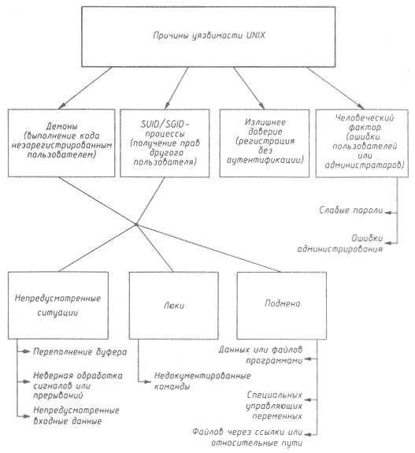

Безопасность >>>
АТАКА НА INTERNETПричины существования уязвимостей в UNIX-системах
Проанализировав большой фактический материал, коснемся причин, по которым описанные нарушения безопасности UNIX имели место, и попытаемся их классифицировать (рис. 9.4). Сразу оговоримся, что классификация ни в коей мере не претендует на новизну или полноту - кому интересна эта тема, предлагаем обратиться к более серьезным научным работам [11, 27]. Здесь же мы опишем вполне понятные читателю причины, по которым происходит до 90% всех случаев вскрытия UNIX-хостов:
 Рис. 9.4. Причины уязвимости UNIX Механизмы 1 и 2, являющиеся неотъемлемой частью идеологии UNIX, были и будут лакомым кусочком для хакеров, так как пользователь в этом случае взаимодействует с процессом, имеющим большие привилегии, и поэтому любая ошибка или недоработка в нем автоматически ведет к использованию этих привилегий. О механизме 3 уже достаточно говорилось выше. Повторим, что в UNIX много служб, использующих доверие, и они могут тем или иным способом быть обмануты. Итак, вот те причины, по которым демоны и SUID/SGID-процессы становятся уязвимыми:
К первой можно отнести классическую ситуацию с переполнением буфера или размерности массива. Заметим сразу, что конкретные атаки, несмотря на универсальность способа, всегда будут системозависимыми и ориентированными только на конкретную платформу и версию UNIX. Хорошим примером непредусмотренной ситуации в многозадачной операционной системе является неправильная обработка некоторого специального сигнала или прерывания. Часто хакер имеет возможность смоделировать ситуацию, в которой этот сигнал или прерывание будет послано (в UNIX посылка сигнала решается очень просто - командой kill, как в примере с sendmail). Наконец, одна из самых распространенных ошибок программистов - неправильная обработка входных данных, что является некоторым обобщением случая переполнения буфера. А если программа неправильно обрабатывает случайные входные данные, то, очевидно, можно подобрать такие специфические входные данные, которые приведут к желаемым для хакера результатам, как случилось с innd. Люком или "черным входом" (backdoor) часто называют оставленную разработчиком недокументированную возможность взаимодействия с системой (чаще всего - входа в нее), например, известный только разработчику универсальный "пароль". Люки оставляют в конечных программах вследствие ошибки, не убрав отладочный код, или вследствие необходимости продолжения отладки уже в реальной системе из-за ее высокой сложности, или же из корыстных интересов. Люки - это любимый путь в удаленную систему не только у хакеров, но и у журналистов, и режиссеров вместе с подбором "главного" пароля перебором за минуту до взрыва, но, в отличие от последнего способа, люки реально существуют. Классический пример люка - это, конечно, отладочный режим в sendmail. Наконец, многие особенности UNIX, такие как асинхронное выполнение процессов, развитые командный язык и файловая система, позволяют злоумышленникам использовать механизмы подмены одного субъекта или объекта другим. Например, в рассмотренных выше примерах часто применялась замена имени файла, имени получателя и т. и. именем программы. Аналогично может быть выполнена подмена специальных переменных. Так, для некоторых версий UNIX существует атака, связанная с подменой IFS (internal field separator - символ разделителя команд или функций) на символ "/". Это приводит к следующему: когда программа вызывает /bin/sh, вместо него вызывается файл bin с параметром sh в текущем каталоге. Похожая ситуация возникает при атаке на telnetd. Наконец, очень популярным в UNIX видом подмены является создание ссылки (link) на критичный файл. После этого файл-ссылка некоторым образом получает дополнительные права доступа, и тем самым осуществляется несанкционированный доступ к исходному файлу. Подобная ситуация с подменой файла возникает, если путь к нему определен не как абсолютный (/bin/sh), а как относительный (../bin/sh или $(BIN)/sh). Такая ситуация также имела место в рассмотренной уязвимости telnetd. И последнее, о чем уже подробно говорилось во второй главе, - нельзя приуменьшать роль человека в обеспечении безопасности любой системы (про необходимость выбора надежных паролей упоминалось ранее). Неправильное администрирование - тоже очень актуальная проблема, а для UNIX она особенно остра, так как сложность администрирования UNIX-систем давно стала притчей во языцех, и часто именно на это ссылаются конкуренты. Но за все надо платить, а это - обратная сторона переносимости и гибкости UNIX. Настройки некоторых приложений, той же sendmail, настолько сложны, что для поддержания работоспособности системы требуется специальный человек - системный администратор, но даже он, мы уверены, не всегда знает о всех возможностях тех или иных приложений и о том, как правильно их настроить. Более того, если говорить о слабости человека, защищенные системы обычно отказываются и еще от одной из основных идей UNIX - наличия суперпользоватсля, имеющего доступ ко всей информации и никому не подконтрольного. Его права могут быть распределены среди нескольких людей: администратора персонала, администратора безопасности, администратора сети и т.п., а сам он может быть удален из системы после ее инсталляции. В результате вербовка одного из администраторов нс приводит к таким катастрофическим последствиям, как вербовка супернользователя.
|